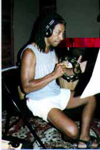
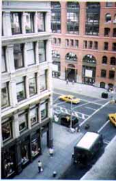

Recording Photos
...New York Session
・diaryのページへ
・New York Sessionのページへ
・Recording Diaryのページへ
・Sound Section Web Siteのトップページへ
1998.7.23（木）
さいごの日
バシリ・ジョンソンさん
（楽器：コンガ）
とにかくすごい荷物でした。（くまたに）
おお、本物のバシリさんがたたいてるう。
うれしすぎる。（とこい）

バシリ・ジョンソンさん
（楽器：タンバリン）
おもちゃ（ちゃんとした楽器だけど）がすごくって、 初めて見るものばかり。（くまたに）
タンバリンって難しくて奥が深いって事、知ってましたか?（とこい）
バシリ・ジョンソンさん
（楽器：ティンパレス）
全部演奏できるんだもんなー、やっぱすごいよ。（くまたに）
このティンパレスで最後の息吹きをBIGの曲に吹きかけたんです。（とこい）

Beat On Beatの窓からの風景
Beat on beatの窓から覗いたNew Yorkの風景です。
まわりはビルだらけ。
でも、なんか東京とは違うんです。絵になるというか...（くまたに）
丁度、タワーレコードがあって、ドリカムのCDがかなりのチャートに食い込んだことをこの場で知りました。
頑張れ、日本!（とこい）
インデックスにもどる
・diaryのページへ
・New York Sessionのページへ
・Recording Diaryのページへ
・Sound Section Web Siteのトップページへ
Jan.1999 SEGA CS Sound Team